How it runs, how I update it, and how I (try to)
keep it all from catching fire
Running your own apps and services on hardware you control,
instead of relying on third-party
cloud providers.
Inspired by r/selfhosted
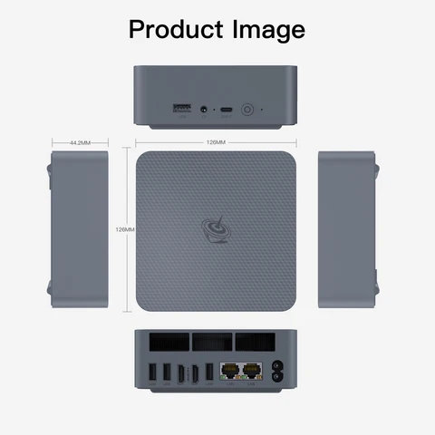
No fancy router needed — the ISP's default router does the job.
Total hardware cost
$319
Securely connect to anything on the internet
Protect everything you connect to the Internet
Set up DHCP reservations for predictable IP addresses:
Install Docker & enable it on boot:
# Install Docker
sudo apt update
sudo apt upgrade -y
curl -sSL https://get.docker.com | sh
# Add current user to the docker group
sudo usermod -aG docker $USER
logout
# Run containers on boot
sudo systemctl enable dockerInstall Tailscale client on the server
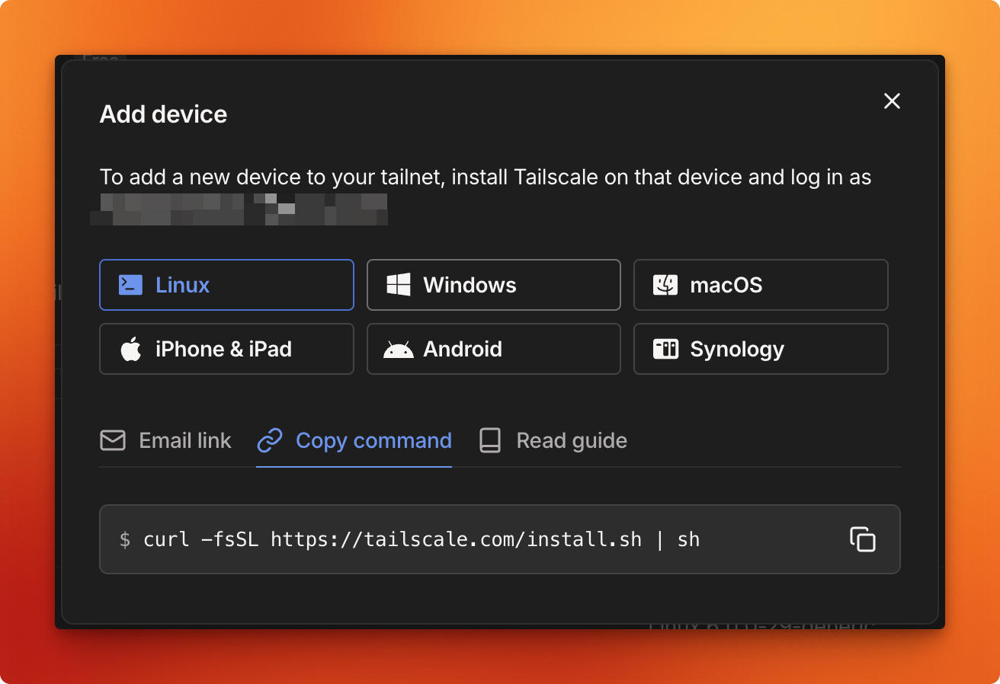
Point all subdomains to the Tailscale IP address in Cloudflare:
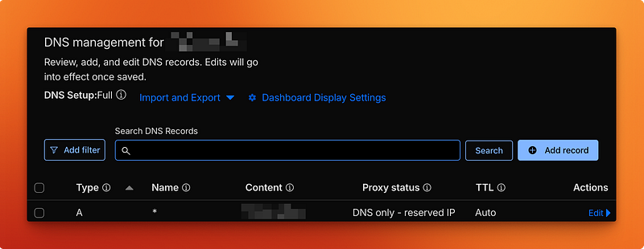
Server is now fully reachable over the VPN
A reverse proxy receives incoming network requests and routes them to the correct backend service.
Access services via subdomains instead of
ugly port numbers:
https://app.domain.tld vs http://192.168.1.10:8080
services:
core:
image: ghcr.io/a-cool-docker-image
restart: unless-stopped
ports:
- 8080:8080
labels:
- traefik.enable=true
- traefik.http.routers.app-name.rule=Host(`subdomain.root.tld`)
networks:
- traefik_default
networks:
traefik_default:
external: trueTraefik + Cloudflare certificate resolver
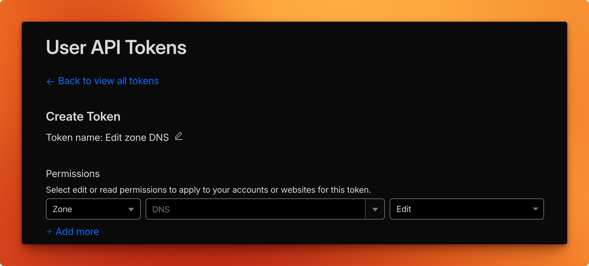
services:
traefik:
image: traefik:v3.2
container_name: traefik
restart: unless-stopped
privileged: true
command:
- --entrypoints.websecure.http.tls=true
- --entrypoints.websecure.http.tls.certResolver=dns-cloudflare
- --entrypoints.websecure.http.tls.domains[0].sans=*.root.tld
- --certificatesresolvers.dns-cloudflare.acme.dnschallenge=true
- --certificatesresolvers.dns-cloudflare.acme.dnschallenge.provider=cloudflare
- --certificatesresolvers.dns-cloudflare.acme.dnschallenge.delayBeforeCheck=10
- --certificatesresolvers.dns-cloudflare.acme.storage=storage/acme.json
environment:
- CLOUDFLARE_DNS_API_TOKEN=${CLOUDFLARE_DNS_API_TOKEN}A tool to build and deploy software on many servers
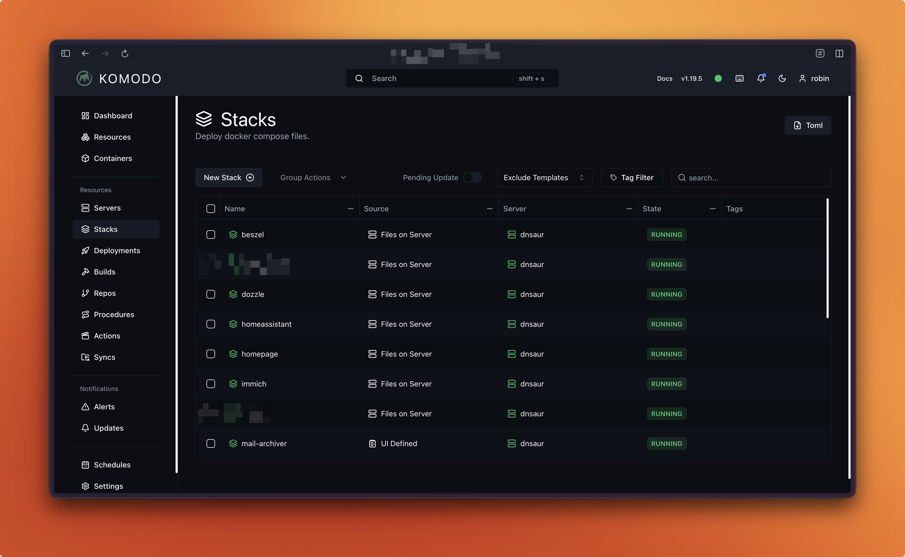
A modern and powerful wiki app to document everything
from the very beginning.
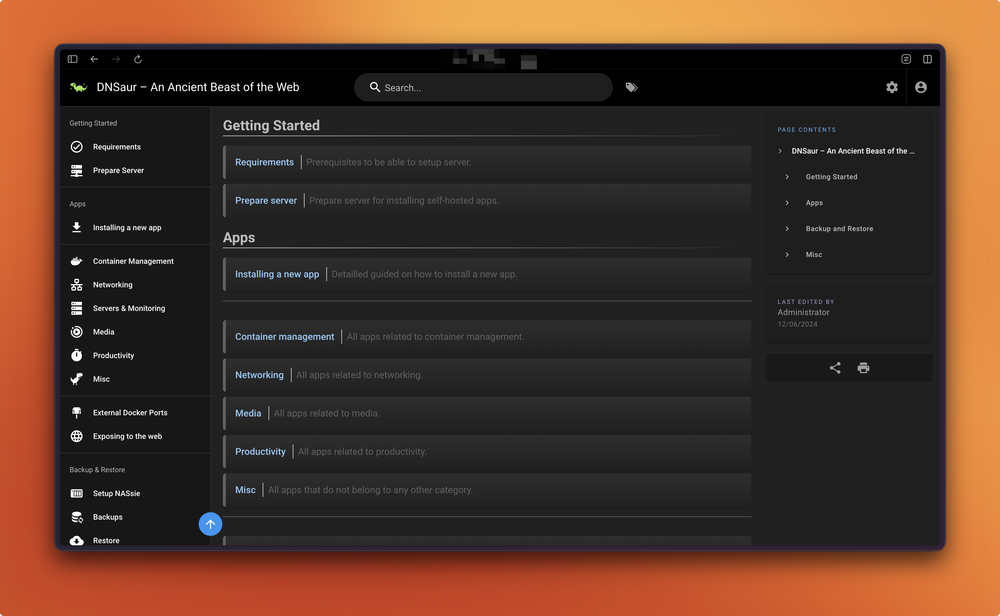
Wiki.js backs up all content to private Git repositories.
A highly customizable homepage with Docker and service API integrations.
Configured entirely through Docker labels —
no separate config file needed.
services:
core:
image: ghcr.io/a-cool-docker-image
restart: unless-stopped
ports:
- 8080:8080
labels:
- homepage.group=Misc
- homepage.name=Stirling PDF
- homepage.href=https://stirlingpdf.domain.tld
- homepage.icon=sh-stirling-pdf.png
- homepage.description=Locally hosted app for PDF operations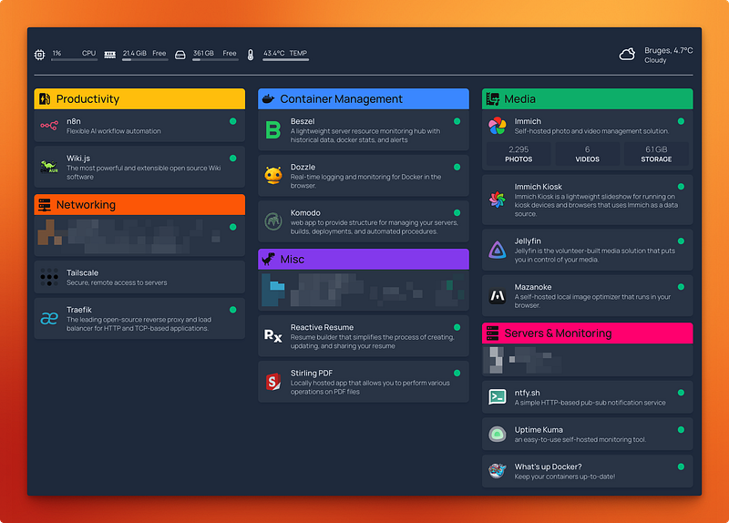
Clean and simple dashboard
Self-hosted HTTP-based pub-sub notification service.
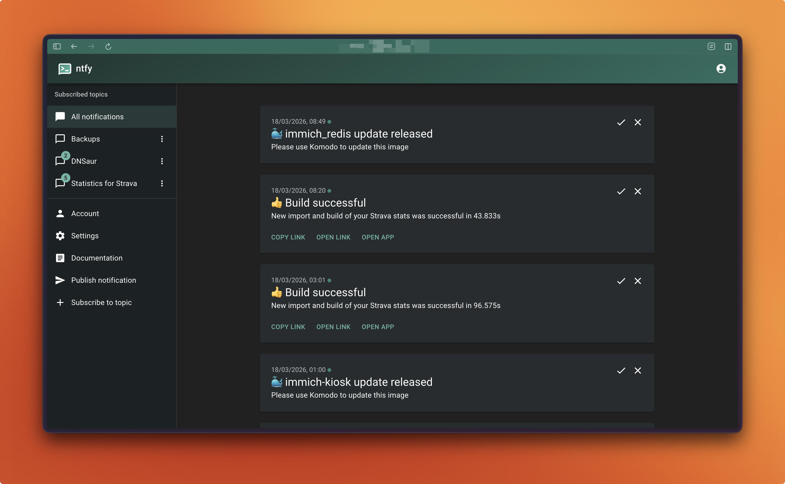
Monitors Docker images and sends notifications
whenever a new version is released.
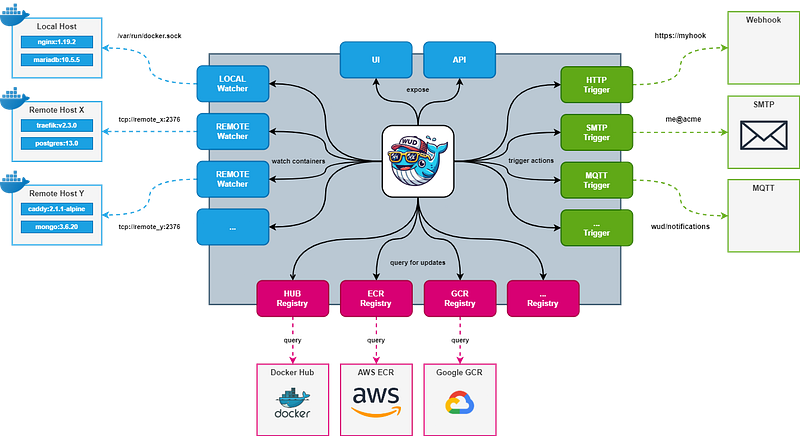
Self-hosted monitoring tool that alerts you
whenever a service or app goes down.
Keep three copies of your data, on two different media, with one copy off-site.
Zerobyte is built on top of Restic, a powerful CLI-based backup tool.
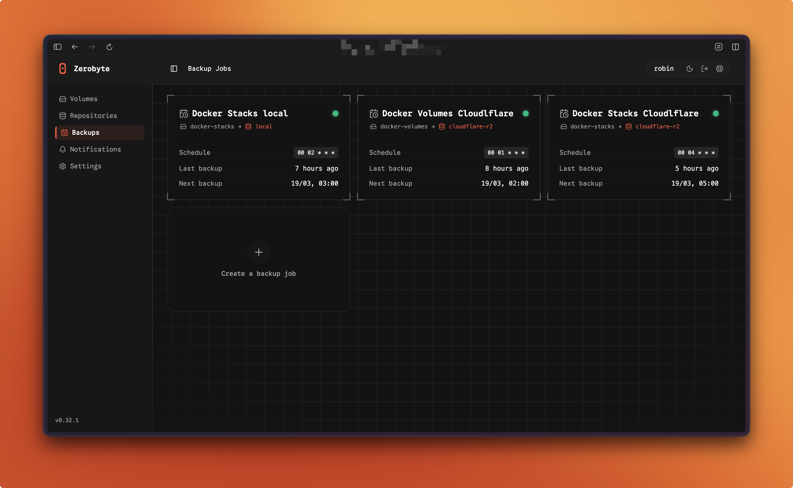
Some services need to be publicly accessible,
like my resume.
But security comes first — no random access
to the server or local network.
Created a Cloudflared tunnel via
Zero Trust → Network → Tunnels
services:
tunnel:
image: cloudflare/cloudflared
restart: unless-stopped
command: tunnel run
environment:
- TUNNEL_TOKEN=[CLOUDFLARE-TOKEN]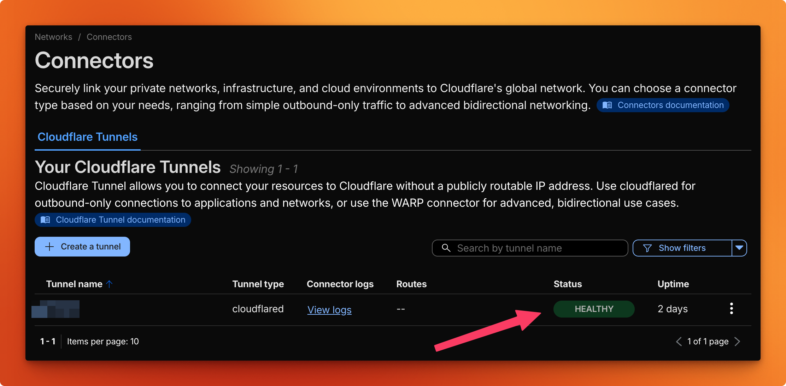
Cloudflare picks up the tunnel
Added a public hostname pointing to the Tailscale IP address.
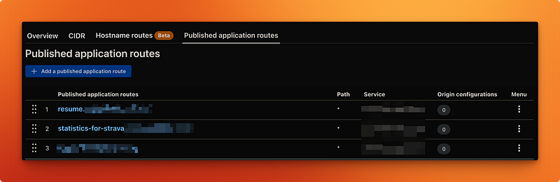
Service accessible from the internet, server stays hidden
This is simply the setup that works well for me.
There are many valid ways to build a homeserver.